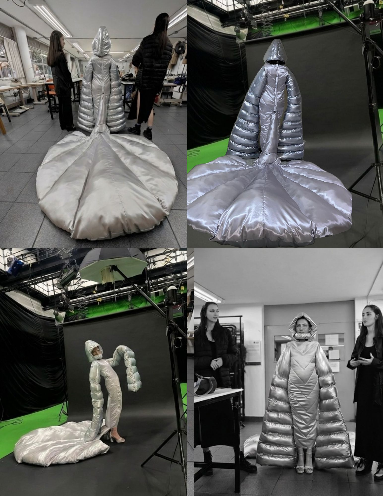
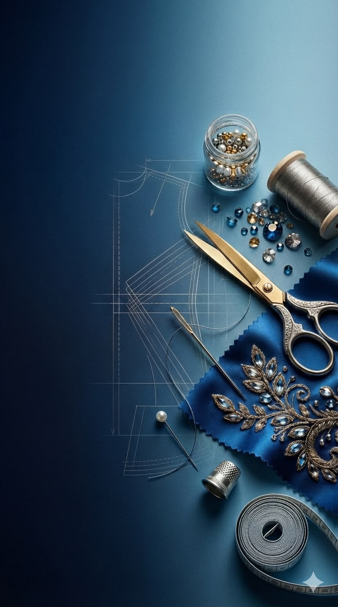
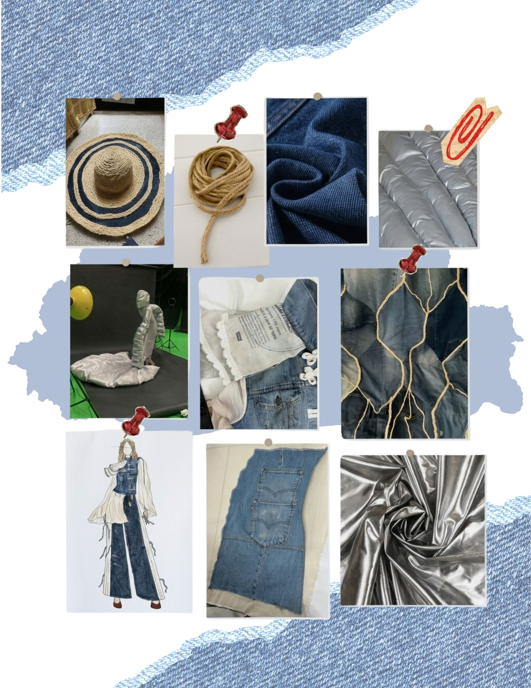
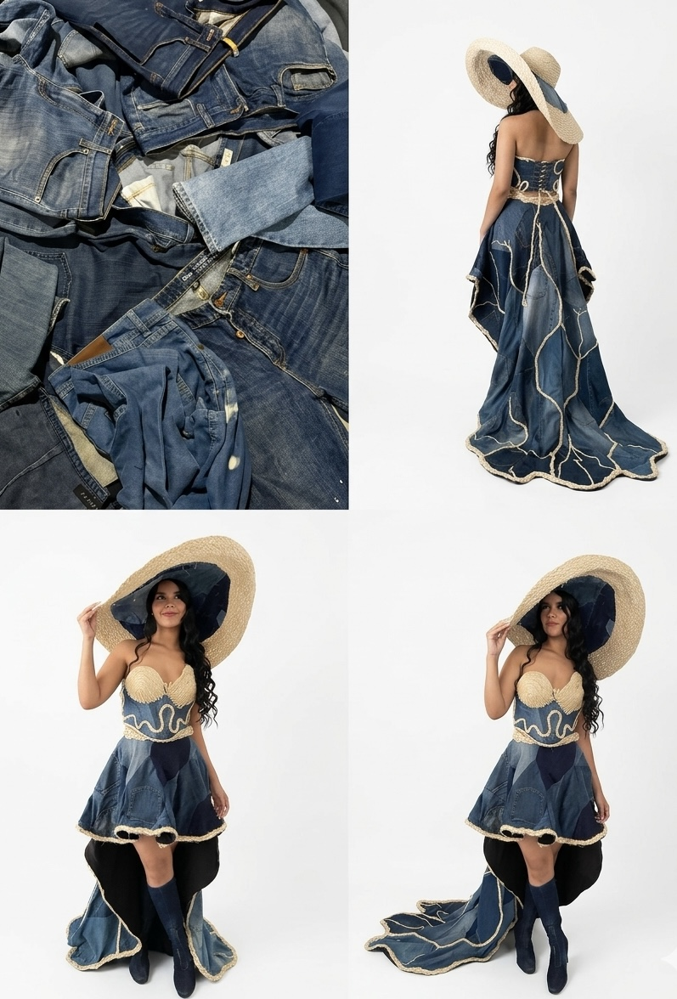
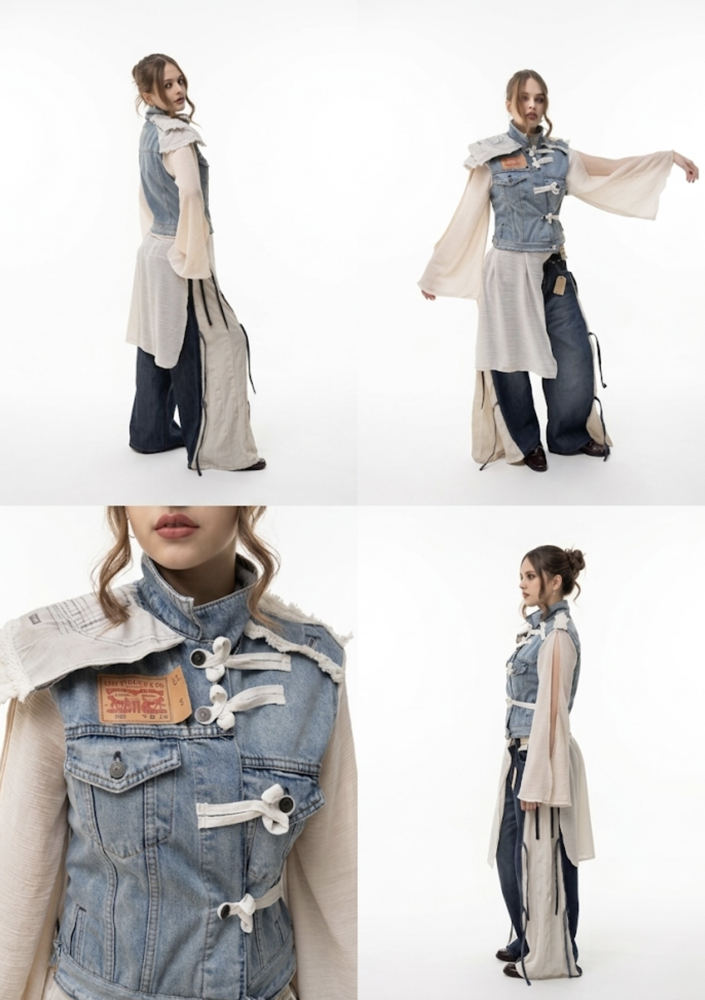

Mausoleo Distópico
Crítica al consumismo desmedido por Sara Posso, Valeria Villa y Andrea Contreras.
Sesión de fotos
2024

Retos diseño de vestuario
Los retos de diseño de vestuario son ejercicios académicos de creación intensiva desarrollados en un tiempo aproximado de una semana.

CONCEPTUALIZACIÓN
Marzo 2024, Experiencias investigativas del vestir y la moda, Diseño para la crisis y transiciones.
Este rápido de diseño nos permitió especular desde la proyección de nuevos mundos, a partir de una pregunta: ¿Qué pasaría si estuviéramos a temperaturas -10º Celsius? Nuestra respuesta a eso fue crear “El mausoleo distópico” esta es una prenda que imagina un escenario que cítrica el consumismo desmedido de personas con gran poder adquisitivo que ha llevado al desequilibrio climático.
Su alto cuello simboliza la ignorancia que les impide ver la realidad mientras son asfixiados por su avaricia. Las mangas, la cola del vestido y la capota representan el peso de los pecados medioambientales y las consecuencias de su insaciable deseo de consumir más, “Para así diseñar cuerpos y diseñar futuros.
CONCEPTUALIZACIÓN
Abril 2025, Moda circular: Laureles no solo como urbanismo sino como identidad, ¿cómo habitamos sin destruir?
En este reto tuvimos tres días para crear un vestuario que representara a Laureles, algo de su naturaleza y que al mismo tiempo fuesen a partir de prendas ya existentes, se realizó en el día uno luego de dar el enunciado una Cata de vestuario, en donde se analizaron prendas de segunda, sus textiles, su tiempo de vida, adaptaciones, cumplimiento de su función, entre otros, esto ayudó a tenerlo en cuenta para llevar a cabo del reto.
Inspirados en su gente y en el árbol de caucho, creamos un vestido que es equilibrio: denim reciclado, como la ciudad que crece, y yute, como raíces que la sostienen. Un sombrero imponente proyecta sombra, como los árboles que protegen. Esta pieza es un manifiesto: la moda puede regenerar, la belleza puede ser sostenible y la ciudad, si aprende de la naturaleza, puede florecer.
CONCEPTUALIZACIÓN
Marzo 2026, Los juegos del vestuario.
Cada grupo se basaba en un distrito positivo principal para el desarrollo del producto final, la marca Levi's patrocinó las prendas de las cuales se partiría el ejercicio, nos entregaron tres jeans y una chaqueta esa fue la base para poder continuar, nuestro distrito era Armonía, los valores centrales de este son Equilibrio integral y bienestar emocional. Quisimos realizar un vestuario que permitiera la conexión con la mente y el cuerpo, para las personas que practican moviendo consciente y que se sienten atrapadas, poder crear un vestuario que abrace pero no apriete, que contenga pero no atosigue.
A través del upcycling de piezas de Levi's, se transforma la memoria del material en un lenguaje de evolución y disciplina. La reinterpretación del uniforme tradicional chino abre un espacio de experimentación formal, donde estructura y fluidez coexisten.
Metodología
Cada rápido de diseño es un ejercicio intensivo de una semana que exige investigar, tomar decisiones y materializar una propuesta de vestuario capaz de responder a un reto específico en un tiempo limitado.
Cada reto inicia con la presentación del enunciado por parte de los docentes, donde se exponen el contexto, los objetivos y las restricciones del ejercicio. Posteriormente se conforman los equipos de trabajo -según la dinámica del proyecto- y comienza el análisis de la problemática para definir una dirección conceptual.
Durante la primera jornada se desarrolla una exploración intensiva mediante investigación, lluvia de ideas, referentes y bocetación. Al finalizar el día, cada equipo presenta sus propuestas para seleccionar el diseño que será desarrollado durante el resto del reto.
Con el diseño definido, se toman decisiones técnicas y productivas: cálculo del consumo textil, selección y compra de materiales, elaboración del patronaje y desarrollo de la prenda mediante procesos de confección, experimentación y ajustes.
Al finalizar el reto, cada equipo realiza un brief de menos de diez minutos para comunicar el concepto, el proceso y las decisiones de diseño. La presentación se acompaña de una infografía de apoyo; sin embargo, el vestuario debe ser capaz de comunicar la propuesta por sí mismo, evidenciando la relación entre concepto, materialidad y construcción.
Entre los proyectos que conforman esta sección, "El Mausoleo Distópico" fue seleccionado entre los mejores rápidos de diseño de su semestre y obtuvo reconocimiento, destacándose por la solidez de su propuesta conceptual, el desarrollo de la prenda y la reflexión crítica que plantea sobre la crisis climática y el consumismo.

Crítica al consumismo desmedido por Sara Posso, Valeria Villa y Andrea Contreras.

Aprender a florecer por Sara Posso, Ana Grajales, Maria Quintero, Maria Gonzalez y Andrea Contreras.

Procesos del alma por Natalí Alba, Emiliano González y Andrea Contreras.